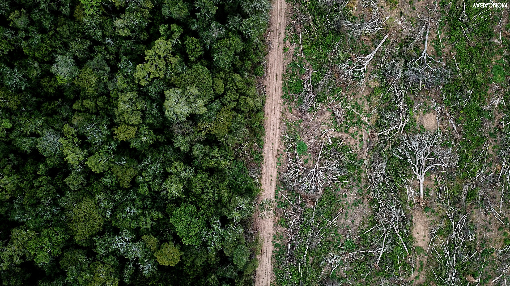

Deforestation of the Amazon rainforest in Brazil is at it's highest level since 2008.
In the past, deforestation in the Amazon was mainly the product of subsistence farmers who cut down trees in order to produce crops. This was all in very small quantities which wouldn’t make a difference with such a big forest. Unfortunately in the late 20th century it changed, agriculture was expanding and needed a lot of resources.
Although the Amazon was cleared faster and faster, in between 2004 and early 2010s annual forest loss has slowed down by 80%. This was due satellite monitoring, new protected areas, pressure from environmentalists. That all changed when the Temer administration came to power and Jair Bolsonaro was elected. He opened the rainforest to industries and agribusiness.
The Amazon is a carbon store that is vital since it slows down the pace of global warming. Jair Bolsonaro took office in January 2019, since then it’s been losing more and more trees every day. The Brazilian president Jair Bolsonaro has ENCOURAGED mining and agriculture activities in the rainforest. The rainforest is a home to three million different species of plants and animals, and a million indigenous people.
BBC UK
A total of 11,088 sq km (4,281 sq miles) of rainforest were destroyed from August 2019 to July 2020. This is a 9.5% increase from the previous year.
New Brazilian president Bolsonaro has set a goal of slowing down the pace of deforestation to 3,900 sq km annually by 2020 and he has cut funding to deferral agencies that had power to arrest and fine farmers who were breaking environmental law. He has also accused Inpe over the deforestation data and accused them of smearing Brazil’s reputation.
Fires in the Amazon rainforest are increasing at a rapid rate, the region where the rainforest is located is experiencing its worst decade of blazes. In September of 2020 satellites have shown 32,000+ hotspots which is a 61% rise from 2019.
NASA developed a new tool which can track the fires from outer space using satellites to collect visible and infrared imagery. With that they detect thermal anomalies which are basically hotspots. In 2019 it found 1.1 million anomalies, but in 2020 it has found 1.4 million!
UN Secretary-General António Guterres
In the midst of the global climate crisis, we cannot afford more damage to a major source of oxygen and biodiversity.
What do we do? There are several proven ways we can help the rainforest. Brazil must start the rehabilitation of the habitat and the species as well as changing their policies about deforestation for the better. The world has to come together and do their best with helping Brazil resolve this problem. This rainforest is our future and when the point of no return comes we will be in serious trouble.
The Amazon rainforest is one of the places on earth that proves the beauty of nature. The 55-million-year-old forest with over 390 billion trees is not just a rainforest, but our hope for the future. Humans can’t live without oxygen, but we are destroying places like these, who produce oxygen and absorb carbon dioxide.
Leonardo DiCaprio
The largest rainforest in the world is a critical piece of the global climate solution. Without the Amazon, we cannot keep the Earth’s warming in check.
Amazon rainforest is the most biodiverse region on earth, 'Lungs of the Earths' is a name given to it for providing around 20% of the earths oxygen and it has billions of trees that absorb carbon dioxide, hence slowing down the global warming. It is also a shelter to three million species of plants and animals.